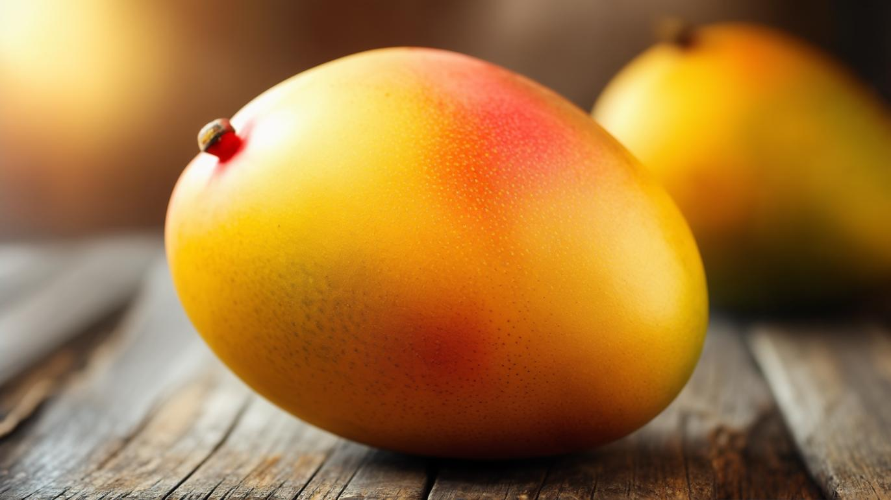
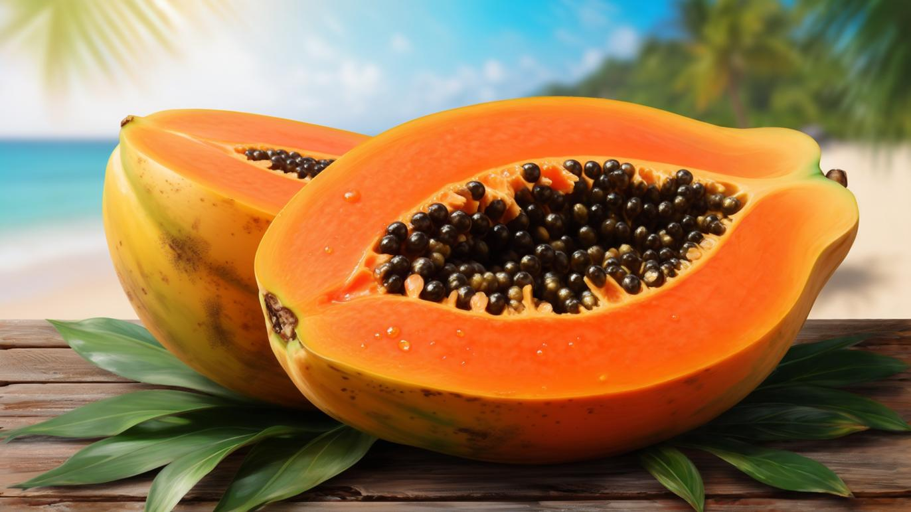
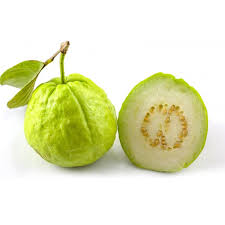
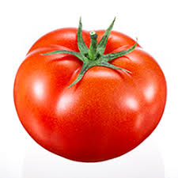
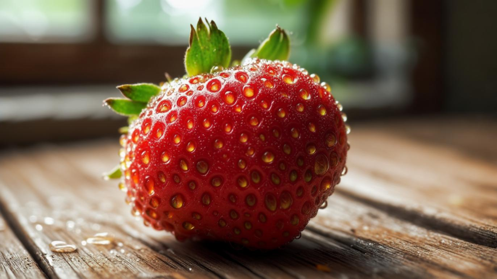

Neem
Neem is a powerful medicinal tree with antibacterial, antifungal and antiviral properties. It supports skin health, purifies blood and boosts immunity in Ayurveda.
Read MoreDiscover 50+ plants & fruits with easy details, uses & cultural value.
Neem is a powerful medicinal tree with antibacterial, antifungal and antiviral properties. It supports skin health, purifies blood and boosts immunity in Ayurveda.
Read More
Known as the “King of Fruits”, mangoes are rich in vitamin A, C and fiber. They strengthen immunity, improve digestion and symbolize prosperity in traditions.
Read MoreRich in potassium, fiber and natural sugars for instant energy. Bananas aid digestion, support heart health and are loved by athletes worldwide.
Read More
Apples are crunchy fruits packed with dietary fiber, antioxidants and vitamin C. They help maintain heart health, regulate blood sugar and are known as a wholesome snack. "An apple a day keeps the doctor away."
Read MoreOranges are juicy citrus fruits abundant in vitamin C. They strengthen immunity, support skin health, and provide hydration. Their tangy flavor and refreshing juice are used worldwide.
Read More
Papaya is rich in digestive enzymes like papain. Its orange flesh contains vitamins A & C. Seeds are used in detox remedies. A tropical fruit that grows abundantly.
Read MoreGrapes are rich in antioxidants like resveratrol that support heart health. Eaten fresh, as juice or wine, they are valued worldwide for taste and health.
Read More
Guava is high in vitamin C, fiber and antioxidants. Supports digestion, immunity and blood sugar balance. Leaves are used in teas for gut health.
Read More
Technically a fruit, tomatoes are rich in lycopene, vitamin C & potassium. They support heart health, skin health and are a cooking staple worldwide.
Read MoreSacred herb in India, Tulsi boosts immunity, supports respiratory health and reduces stress. Used in Ayurveda & daily rituals.
Read More
A powerful adaptogen used to reduce stress, improve energy & strengthen immunity. Supports brain health, memory and physical endurance.
Read More
Ginger aids digestion, relieves nausea and reduces inflammation. Contains gingerol with antioxidant effects. Used in teas, cooking & remedies.
Read More
Golden spice rich in curcumin with anti-inflammatory powers. Supports joints, immunity and digestion. Widely used in food & remedies.
Read MoreValued for fruit, shade and cultural symbolism. Leaves used in rituals, wood in furniture. Represents prosperity across Asia.
Read More
Known as the "Tree of Life". Provides water, flesh, oil and materials for rituals, cooking & skincare. Every part has a use.
Read MorePineapple is rich in vitamin C & bromelain enzyme. Supports digestion, boosts immunity and offers anti-inflammatory benefits.
Read More
Lemons are rich in vitamin C. Promote detox, improve digestion, and support immunity. Widely used in drinks & cooking.
Read More
Bright berries rich in vitamin C & antioxidants. Support heart health, skin health and are loved worldwide for taste.
Read More
Juicy fruit high in fiber & vitamins. Gentle on digestion, hydrating & refreshing. Eaten fresh or cooked worldwide.
Read More
Nutrient-dense fruit with healthy fats & vitamin E. Known as “nature’s butter”. Supports heart health & glowing skin.
Read More
Ancient fruit used for olive oil. Rich in antioxidants & healthy fats. Supports skin & heart health.
Read MoreFragrant herb that enhances memory & circulation. Strong antioxidant, used in teas & cooking.
Read More
Cooling herb used in teas & chutneys. Freshens breath, aids digestion & uplifts mood naturally.
Read More
Seeds rich in oils & minerals. Used as spice, condiment & medicine for centuries. Supports heart health.
Read More
Sweet fruit packed with fiber, calcium & iron. Supports digestion & bone health. Enjoyed fresh or dried.
Read More
Brain food rich in omega-3s. Supports memory, energy & heart health. Perfect as snack or in meals.
Read More